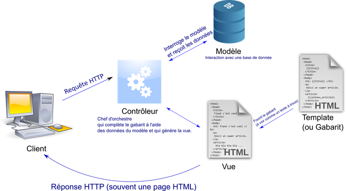
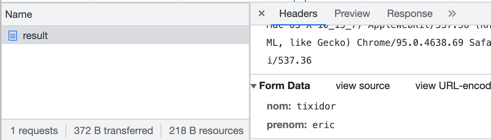

serveur Flask
Flask
Flask est une bibliothèque python fournissant les outils pour faire fonctionner un serveur web.

Fonctionnement de Flask
- Le contrôleur: gère le fonctionnement du site Web. Le programme est écrit en python.
- Les vues: cette partie se concentre sur l’affichage, et a pour rôle d’assembler le code HTML issu du template. Dans une vue, on peut mettre en oeuvre des algorithmes écrits en python. La vue va partager des variables avec les templates.
- Les templates: c’est le modèle de la page HTML qui sera utilisée par la vue pour générer la page HTML envoyée au client. Cette page peut être personnalisée selon les variables partagées avec la vue. C’est grâce à certaines parties écrites en langage JINJA2, dans le corps du script du template que la substitution des éléments HTML sera réalisée. Un peu comme un texte à trous.
Structure du projet
Créez dans vos Documents un dossier serveur_form.
Créez les sous-dossiers templates, static, et images, comme sur l’arborescence suivante:
fichier serveur
à faire
- Ouvrir un editeur Python (Spyder par exemple)
- créez un fichier Python “main.py” (ce fichier devra être sauvegardé dans le répertoire “serveur_form” précédemment créé). Saisissez le code suivant dans le fichier “main.py”
Ce fichier main.py contient les vues (les pages), et lance le contrôleur lorsqu’il est executé.
-
Executer le programme ci-dessus
-
ouvrez votre navigateur web et tapez dans la barre d’adresse “localhost:5000”
Vous devriez voir la phrase “Tout fonctionne parfaitement” s’afficher dans votre navigateur.
Explications
notre serveur et notre client se trouvent sur la même machine, avec le “localhost”, on indique au navigateur que le serveur web se trouve sur le même ordinateur que lui (on parle de machine locale).
La barre d’adresse doit être renseignée avec l’adresse du serveur web: http://127.0.0.1:5000 ou bien http://localhost:5000
En exécutant le programme Python ci-dessus, le framework Flask a lancé un serveur web. Ce serveur web attend des requêtes HTTP sur le port 5000. En ouvrant un navigateur web et en tapant “localhost:5000”, nous faisons une requête HTTP.
Cette requête demande au serveur de lui retourner la ressource située à la racine du site Web.
Le serveur web fourni avec Flask répond à cette requête HTTP en envoyant une page web (une vue) contenant uniquement <p>Tout fonctionne parfaitement</p>. C’est ce qui est retourné par la fonction index et le groupe de lignes:
Dans la console de l’IDE python, nous voyons ainsi les requêtes et les éventuelles erreurs. C’est un bon moyen de visualiser les requêtes vers le serveur.
Par exemple lorsque vous avez ouvert le navigateur à l’adresse 127.0.0.1:5000/ vous avez eu une ligne qui est apparu dans la console :
127.0.0.1 - - [27/Feb/2025] "GET / HTTP/1.1" 200 -
Voir le chapitre sur les protocoles HTTP pour plus d’explications.
Ajouter la page de formulaire
Dans le dossier templates, vous allez créer la page de formulaire form.html
Celui-ci contiendra les éléments input de type text et nommés nom et prenom, ainsi qu’un bouton pour envoyer les données du formulaire.
Le formulaire utilisera la méthode POST pour envoyer les données. Celles-ci vont parvenir à la page result.
La page result.html
Saisir le script HTML (notepad ++) suivant dans le fichier result.html du dossier templates:
Cette requête POST sera envoyée à l’URL http://localhost:5000/result (voir l’attribut “action”). Les données saisies dans le formulaire seront envoyées au serveur par l’intermédiaire de cette requête.
En réponse à la requête POST, le serveur renvoie une page HTML créée à partir du template resultat.html et des paramètres nom et prenom.
Vous remarquerez que cette page contient des éléments d’un autre langage: {{prenom}} {{nom}}. Il s’agit d’instructions en Jinja2, un langage serveur comme PHP.
Ce langage est executé côté serveur et il génère des bouts de script HTML AVANT que la page ne soit retournée au client.
Ici, ce seront les contenus de variables qui remplacent {{prenom}} {{nom}} dans le script HTML.
Fichier main.py
Modifiez le fichier main.py comme suit :
Observez comment la fonction result va ouvrir la page result.html tout en passant les variables nom et prenom, par la méthode POST.
Observez également la ligne précédent la definition de la fonction result:
celle-ci contient un décorateur, @app.route('/result'... sur l’objet app de la librairie flask qui précise le chemin vers le fichier à ouvrir: /result.html
moniteur reseau
méthode POST
Ouvrir le moniteur reseau. Utiliser la page de formulaire, envoyer les donées. Dans le moniteur, cliquer sur l’onglet header.
- Observer l’URL de la requête client. Celle-ci comporte-t-elle des paramètres query?
- Observer le champ formulaire: contient-il l’information des données transmises?

Exemple de moniteur reseau (Chrome)
méthode GET
On peut modifier la méthode HTTP utilisée (POST) par la méthode GET. Cela modifie le traitement des données (python)
voir explications ici
Modifier le projet de la manière suivante:
- Dans “form.html”, la méthode POST sera remplacée par la méthode GET
- Dans le fichier “main.py” remplacer POST par GET, et utiliser
request.argsà la place derequest.form:
Ouvrir le moniteur reseau et recommencer l’opération (transmettre les données par le formulaire):
- Observer l’URL de la requête client. Celle-ci comporte-t-elle des paramètres query?
- Observer le champ Query String parameters: contient-il l’information des données transmises?
Prolongements possibles
Ajouter des pages statiques
Vous pouvez ajouter des pages dans le dossier templates.
Pour des pages statiques, le script contiendra les instructions en HTML que vous connaissez. Les pages peuvent être liées par des liens. Exprimez les liens à partir de la racine / du site.
Exemple: <a href="/">Lien</a> dirigera vers la page d’accueil du site.
Il faudra ajouter une vue vers chacune des nouvelles pages depuis le fichier main.py. Par exemple, supposons que vous avez créé une page test.html dans le dossier templates. Ajouter alors les lignes suivantes dans le fichier main.py:
La page est alors accessible depuis l’adresse http://localhost:5000/test, ou bien http://127.0.0.1:5000/test
Traitement des valeurs du formulaire
C’est au niveau des lignes suivantes que l’on récupère les informations du formulaire:
Il est possible des diriger vers un page différente selon la valeur des informations. On peut imaginer que l’administrateur du site va ouvrir une page différente:
Ajouter une feuille de style
Pour la séance de TP, il est recommandé d’ajouter les instructions CSS directement dans le fichier HTML, avec les balises <script> (plus facile). Mais dans une démarche de projet, on peut mettre le code css dans un fichier externe.
- Créer un nouveau dossier, appelé
staticà la racine du dossier du projet. L’arborescence ressemble alors à:
- Dans le dossier static à la racine du projet: ajouter votre feuille de style avec le nom style.css.
- Dans le debut du fichier main.py, ajouter l’import de
url_foravec:
- Dans le fichier form.html, entre les balises
<head> et </head>, ajouter:
Publiez votre site sur internet
Publiez votre projet en ligne, sur Pythonanywhere.com
- modifier la dernière ligne,
app.run(debug=True)du fichier main.py par:
- Aidez vous de la page suivante (arduino103.blogspot): adaptez le tuto pour concevoir votre site en ligne, pour l’instant sans base de données.
Liens
- TP inspiré de: https://qkzk.xyz/docs/nsi/cours_premiere/ihm_web/flask/
- Flask pas à pas: liris.cnrs dpt bio informatique
- creation d’un petit dictionnaire info-mounier.fr/premiere_nsi